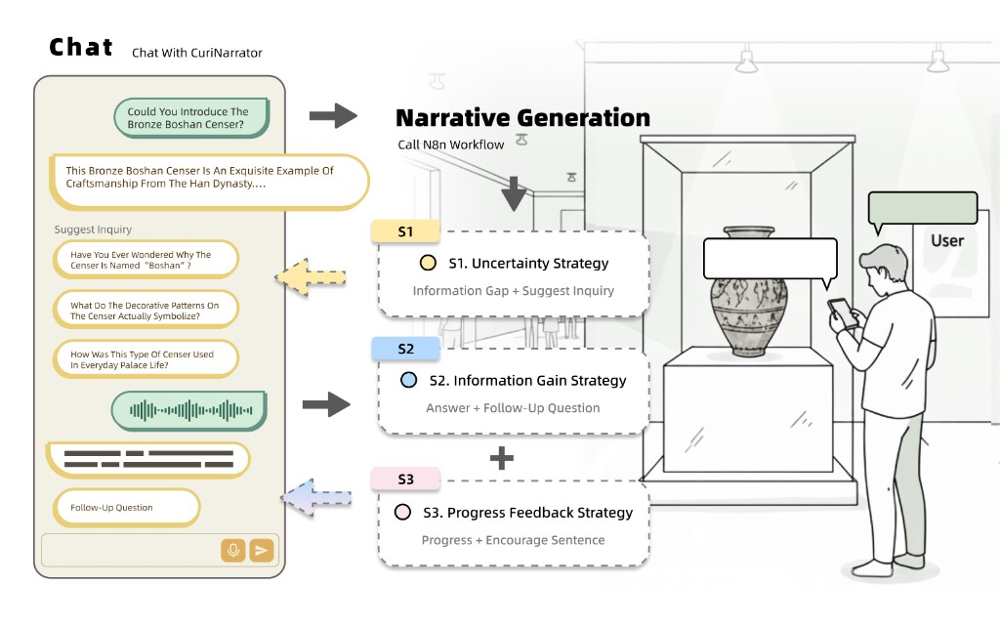

主要科研经历
自适应博物馆 AI 叙事系统
让博物馆讲解同时满足内容可信、叙事个性化和交互可持续，并用现场实验验证策略差异。

背景与问题
参观体验的痛点可以拆成三类：内容是否可信、叙事是否贴着这个人、互动能否持续。现成的大模型讲解很容易在这三点上同时失手。
我的职责
- 规划 3 种叙事策略及 4 条件验证方案。
- 整合 LLM API、RAG、向量检索、n8n 与多智能体工作流，推进内容生成、知识校验、叙事调度和用户反馈。
- 组织 32 名博物馆访客完成现场实验，协调招募、执行、数据分析和论文交付。
方案与实现
用检索增强把讲解钉在馆方知识上，用多智能体拆开生成、校验和调度，再用混合效应模型与主题分析比较不同策略对好奇心和互动深度的影响。
结果与验证
研究成果：Gaps, Gains, and Guidance: Curiosity-Oriented Strategies for AI-Mediated Museum Interpretation（JOCCH 在投）。